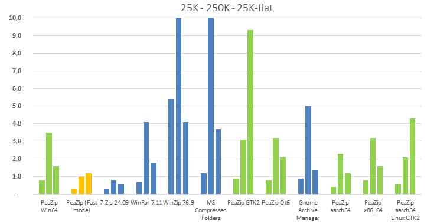

|
Goals
Evaluate GUI frontend responsiveness under heavy
workload.
Compare mainstream archive manager apps,
on
multiple Operating Systems, in terms of times needed to open archives
containing a very large number of files and folders (in the range of
several thousands).
Identify factors that may influence
archive browsing performances when listing thousands of items.
|
Software
settings
- Windows 10 64 bit using 64 bit versions
of:
- 7-Zip 25.00
- PeaZip 10.6.0
- WinRar 7.11
- WinZip 76.9
- Windows 10 built-in Compressed Folders
- Ubuntu Linux 22.04 LTS x86_64
- PeaZip for Linux GTK2 10.6.0
- PeaZip for Linux Qt6 10.6.0
- Gnome Archive Manager
- macOS 15.5
- PeaZip for macOS aarch64 10.6.0
- PeaZip for macOS x86_64 10.6.0
- Asahi Linux on aarch64
- PeaZip for Linux GTK2 aarch64 10.6.0
All applications are tested using default,
out-of-the-box configuration unless specified otherwise. |
|
|
Hardware
settings
Windows: Notebook with Intel Core i7-8565U CPU, 4
physical cores with hyper-threading (8 logical cores), 8 GB RAM
System disk 512 GB PCIe NVMe SSD, NTFS filesystem.
7-Zip benchmark score 23500
Linux: virtual machine over previous hardware.
7-Zip benchmark score 8500
macOS: 2020 MacBook Air with M1 chip.
7-Zip benchmark score 46000
This machine runs both macOS and Asahi Linux aarch64 benchmarks
Since very different technologies are employed, 7-Zip benchmark score
is provided as reference, albeit it is mainly correlated with CPU
performances.
The reference machines can be consider entry level systems due to
limted specs for today's standards.
|
Input data
Subject of the benchmark are 3 archives in ZIP
format,
default compression level, no encryption, containing several small
files of mixed types - in the range of 10s of thousands and 100s of
thousands items.
As content for the ZIP archives it was provided, multiple times, a
directory containing:
1x PeaZip source package
3x PeaZip translations package
totaling about 1000 items, approximately 93% files and 7% directories.
Archive "25K" contains 25 K items, 225 MB in size
Archive "250K" contains 250 K items, 2.25 GB in size
Archive "25-flat" contains 25 K items, all of them in the root of the
archive, 225 MB
in size
|
|
|
Benchmark methods
Benchmark
input archives are saved in a fast SSD system disk, and opened by the
tested applications - which are already started.
A median time in seconds over 5 tests is reported as time to open the
archive for browsing.
Since the tests are conducted on different machines for Windows, Linux,
and macOS systems, 7-Zip benchmark score for each system (rounded) is
reported for
reference in "Hardware settings" paragraph.
Caveats
- Archives are purposely tested on a fast local SSD
drive to put the focus of the benchmark on the efficiency of the tested
utilities: a slow disk or, worse, a remote disk over a slow connection,
will degrade the performances of all applications, adding overhead
time to access the data, the overhead being correlated with the size of
the archive and the speed of the unit.
- External factors may alter the outcome of the test,
i.e. the system could theoretically delay or stop content listing
operations detecting
high CPU / memory usage, or high temperature, or an anti-malware
software may interfere with the operations,
Benchmark listing
times
results
(the lower the better)
|
25K
|
250K
|
25K-flat
|
PeaZip
WIN64
|
0.8
|
3.5 |
1.6
|
PeaZip
WIN64 (Fast mode)
|
0.3
|
1.0
|
1.2
|
7-Zip
|
0.3
|
0.8
|
0.6
|
WinRar
|
0.7
|
4.1
|
1.8
|
WinZip
|
5.4
|
43.0
|
4.1
|
MS
Compressed Folders
|
1.2
|
750.0 |
3.7
|
PeaZip for
Linux GTK2
|
0.9
|
3.1
|
9.3
|
PeaZip for
Linux Qt6
|
0.8
|
3.2
|
2.1
|
Gnome
Archive Manager
|
0.9
|
5.0
|
1.4
|
PeaZip for
macOS aarch64
|
0.4
|
2.3
|
1.2
|
PeaZip for
macOS x86_64
|
0.8
|
3.2
|
1.6
|
| PeaZip
for
Linux GTK2 aarch64 |
0,6
|
2,1
|
4,3
|
Time in seconds (lower better) to complete each benchmark.
Performances opening archives containing an
increasingly large number
of items
While up to
a few thousands items per archive the time needed to open the archive
is
barely noticeable, for any of the tested apps on a modern machine,
with the 25K items and 250K items benchmarks it become evident how well
each
application scales in efficiency for listing an increasingly larger
number of items, in the range of tens of thousands to hundreds of
thousands files (and folders) in archive.
At 25K items only WinZip takes a noticeable delay, resulting the
slowest
app in this test.
At 250K items all applications takes a significant performance hit,
with
opposite extremes being 7-Zip
completing the 250K items test in one second and MS Compressed Folders
completing the same test in over 12 minutes.
With out-of-the-box configuration (default Normal mode), PeaZip shows a
performances profile similar or slightly better than WinRar and Gnome
Archive Manager, but it is slower than 7-Zip which is
the fastest tested application.
Once set in Fast mode, PeaZip
becomes
significantly faster than WinRar and Gnome Archive Manager, and almost
as fast as
7-Zip, which is still the fastes app tested.

Pre-parsing analysis of
archive content with PeaZip
PeaZip performs a comprehensive pre-parsing
analysis of the archive content on opening, listing the entire archive
content (not
only the root level), which clearly adds a penalty in terms of raw
performances.
As tradeoff, this step is meant:
- to warn the user of possible
archive content integrity issues in advance of starting any operation
on archived data
- to reconcile inconsistencies, omissions, and errors /
corruption in archive's TOC in order to be able to create an usable
representation of the content for the file browser (and additionally a
treeview representation of the structure of directories
inside
the archive)
- to display comprehensive stats about the archive
content (size, numberof files, folders, compression ratio, content of
each single directory in archive...)
PeaZip can automatically turn off parts of pre-parsing process in order
to preserve performances, and can completely skip pre-browsing: this
behavior can be set in Options >
Settings, Browser optimization in the Performance group.
By default PeaZip is set in Normal mode, which pre-parses archives in
the range of 256 K items,
while Fast mode has pre-parsing turned off unless listing issues are
auto-detected while opening the archive.
While Fast mode is definitely faster (and most of the possible issues
are auto-detected anyway), it is not the default mode, as thoroughly
checking data integrity is a foremost priority for PeaZip project.
Performances
rendering a
large number of items in the archive browser
25K-flat test shows mainly the efficiency in displaying a
large number of items at once in the file / archive manager component,
i.e. a folder or a search filter containing many thousands files.
In this test the key advantage is the implementation of a virtual list
view, which was implemeted in PeaZip 10.6.0, improving
performances to levels comparable to or better than fast apps like
WinRar and Gnome Archive Manager.
Virtual list view efficiency depends on the widgtset, with PeaZip
10.6.0 showing over 6x performances enhancements on Windows compared to
previous releases, over 30x on macOS (Cocoa is the slowest widgetset in
non-virtual mode), nearly 2x on Qt6 (fastest widgetset in non-virtual
mode), while with GTK2 widgetset there are few benefits.
|
Virtual
|
Non-virtual
|
PeaZip
Win64
|
1.6
|
9.9
|
| PeaZip
(Fast mode) |
1.2
|
9.4
|
| PeaZip GTK2 |
11.9
|
9.3
|
| PeaZip Qt6 |
2.1
|
3.2
|
| PeaZip
aarch64 |
1.2
|
36.0
|
| PeaZip
x86_64 |
1.6
|
59.0
|
| PeaZip
aarch64 Linux GTK2 |
3.4
|
4.3
|
Time in seconds to compete
the 25K-flat test (lower better) on different widgetsets.
In bold the time with
out-of-the-box settings of PeaZip; Virtual mode can be set from Option
> Settings, Performances group.

Fastest application to
browse large archives
7-Zip is the fastest application to open / browse large archives in all
tests.
Out-of-the-box, PeaZip is comparable or better than fast apps like
WinRar
and Gnome Archive Manager, and can be made nearly as fast as 7-Zip
using the Fast mode setting.
Performances comparison of
integrated
system utilities
As for system utilities, Gnome Archive Manager clearly surpasses MS
Compressed Folders in efficiency, and it has comparable performances
with PeaZip for
Linux, even if it is significantly slower on 250K items test (very
large
archives).
Performances on different
widgetset
As expected. displaying many thousands of items at once is the task in
which PeaZip is most influenced by the choice of a specific widgetset,
either with list view in virtual and in non-virtual mode.
Qt6 is the fastest widgetset in non-virtual mode, while Cocoa is the
slowest.
Virtual mode brings to all widgetsets a great performances boost,
except for GTK2.
Performances on Apple
Silicon vs Intel
On an M1 Apple Silicon machine, the native macOS aarch64 build
consistently performed better than the x86_64 build, ranging from 30%
to 50% faster performances.
macOS vs Asahi Linux on
Apple Silicon
Performances in 25K items and 250K items benchmarks are quite similar
(the latter test showing an advantage for Asahi Linux over macOS),
while the 25K-flat test shows an advantage for macOS over Asahi due the
outdated GTK2 widgetset which PeaZip uses on the latter OS.
In non-virtual mode, however, the GTK2 widgetset is significantly
faster than Cocoa, completing the 25K-flat test in 4.3 seconds vs over
half a minute.
Synopsis: Open large archives
benchmark. What is the fastest application to open large archives?
Comparison of archive browsing speed with 7-Zip, PeaZip, and WinRar.
Archive listing benchmark methods, time to open results, comparative of
speed of archive manager utilities for browsing archives containing
thousands of files and folders. Speed test on Windows, Linux, and macOS
aarch64 and Intel.
Topics: PeaZip vs 7-Zip vs
WinRar list large archive content benchmark, which is the fastest
application
PeaZip > Compression
benchmark > Open large archives benchmark
|
|